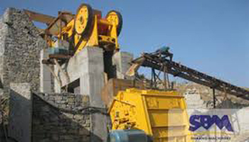
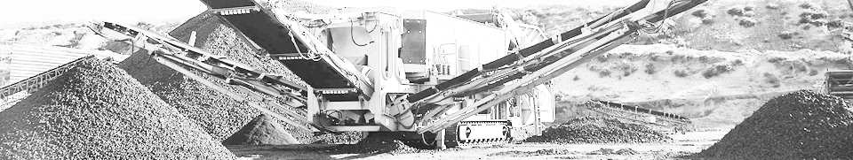

-
Pebble Production Line Equipment
-

- Adopt world first-class manufacturing technology.
- Use highest-level raw material.
- The machine can work long time with non-stop.
- Central lubricating device are installed on the machine, so the bearing is easy to be lubricated.
- Easy operation and easy maintanence.
- Low noise and no pollution.
SBM has pebble gravel crushing machine for sale, and our pebble crusher has wide application which is mainly used in metallurgy, mine ore, chemical industry, cement, building industry, fire-resistance material, ceramics, etc for medium and fine crushing with medium and hard rocks and ores. SBM's pebble crusher attract more and more customers would like to choose our pebble crushing equipment, and our machine not only has good stability, but also has the attractive price. At the same time, we can also give you the best service.
Introduction of VSI Crusher
When you want to get the pebble gravel, you can also use our VSI crusher which has proved that it is well received by our customers, and most of aggregate producers think that as the most suitable crusher for sand making. Thanks for their support, and recently, our company has received many orders from India, South Africa and Pakistan. SBM's pebble crusher plants are exported to Italy, Australia, Vietnam, India, Libya, Kenya, South Africa, Eygpt, Saudi Arabia and so on. In addition, we are able to design the aggregate production line according to your practical requirement.
Features of Pebble Crushers
Pebble Production Line Equipment
In the pebble production line, we should use the jaw crusher, cone crusher, impact crusher, also include the VSI crusher, vibrating feeder, vibrating screen and belt conveyor. Pebble crusher is usually utilized in metal ore crushing and processing inside a recirculation circuit. Typically, pebble jaw crusher often used as primary crushing machine, cone crusher and impact crusher take part in the role of pebble crusher as second crushing equipment which in copper ore crushing and iron ore crushing etc. It is really a perfect crushing equipment for crushing river stone, river gravel, pebble, cobble etc.
-
-
-

CS Cone Crusher ac urna Posted By admin
-
Hammer Crusher ac urna Posted By admin
-
PF Impact Crusher ac urna Posted By admin
-
